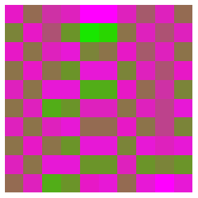

To illustrate the effect of the coupling constant on synchronizaton, we iterate a population of 10 coupled s = 3.99 logistic maps with initially random values.
The generations are plotted one below another, so each vertical column represents the successive states of each logistic map.
|
 |
Return to Synchronization of Chaotic Processes.